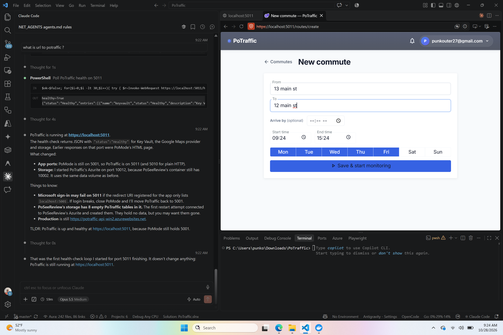

The window started at the current minute and ran 6 hours.
Fixed default from 03:00 to midnight (a 21-hour window that crosses midnight). The rest of the form is unchanged.
Set in src/PoTraffic.Client/Features/Routes/CreateRoutePage.razor.